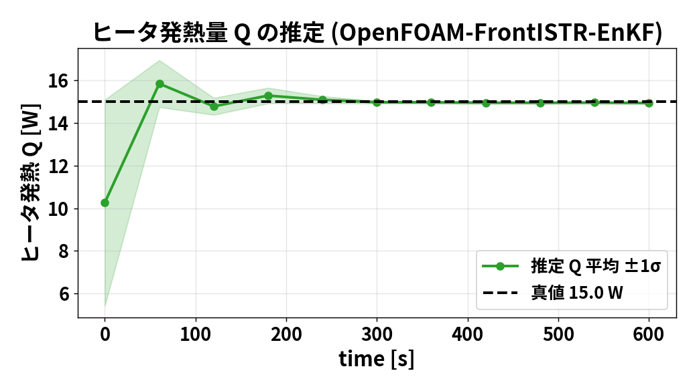

第1部 OpenFOAM＋FrontISTR
出発点：内部の温度と、実際の発熱量がわからない
円筒を片側からヒーターで温める状況を考える。
- 直接測れる量：表面近傍の温度と、上面の伸び。
- 知りたい量：内部を含む温度分布と、ヒーター発熱量Q。
- 不明な条件：初期温度とQが、正確にはわからない。
そのまま計算すると、予測する温度と変形が正解から外れる。
「測れる数か所」から「測れない全体と入力」を推定したい。
中空円筒を対象とした104の数値実験
初期温度とヒーター発熱量を外した予測を、観測で補正する
OpenFOAM × FrontISTR × EnKF
発表者・所属：［記入欄］
OI → KF → EnKF → PF
記号 → 仮定 → 式の展開 → 数値例 → 104の実装
理論式と具体例を両方残し、式の各項が何をしているかを追う。
観測できない状態xを、時刻kまでの観測から推定する。
\[x_k=f_k(x_{k-1})+\eta_k,\qquad y_k=h_k(x_k)+\nu_k\]
x：温度場など、f：時間発展、h：観測に対応する量の計算。
η：モデル・過程の誤差、ν：測定誤差。状態と観測は次元が違ってよい。
ここでは加法ノイズの状態空間モデルを導入する。一般の非加法モデルにもベイズフィルタは拡張できる。
| 記号 | 意味 |
|---|---|
| xᶠ, xᵃ | 観測を使う前の予報／使った後の解析（同化結果） |
| Pᶠ, Pᵃ | 状態の予報／解析誤差共分散 |
| B | OIで与える背景誤差共分散 |
| Ω, R | 過程ノイズ／観測ノイズの共分散 |
| F, H | 線形な時間発展／観測の行列 |
| K | カルマンゲイン（残差から状態補正への係数） |
文献で過程ノイズ共分散をQと表す場合が多いため、ここでは混同防止のためΩを使用する。
\[\bar{x}=\mathrm{E}[x],\qquad P=\mathrm{E}[(x-\bar{x})(x-\bar{x})^T]\]
\[P_{ij}=\mathrm{E}[(x_i-\bar{x}_i)(x_j-\bar{x}_j)]\]
対角Piiは成分iの分散。非対角Pijはiとjの変動の関係。
相関係数は Pij / √(Pii Pjj)。共分散には単位があり、相関係数は無次元。
以下のPは推定誤差についての共分散。EnKFではメンバーのばらつきでこれを近似する。
前時刻の解析 → モデルで予報 → 現時刻の観測を同化 → 現時刻の解析
↑ │
└──────────────── 次の時刻へ ───────────────────────┘KF・EnKF・PFは、状態と不確かさをこのループで伝える。 OIも逐次解析に使えるが、通常は予報誤差共分散を所与のBで近似する。
\[p(x_k\mid y_{1:k})=\frac{p(y_k\mid x_k)\,p(x_k\mid y_{1:k-1})}{p(y_k\mid y_{1:k-1})}\]
右辺の分子は 尤度 × 事前分布、左辺が事後分布。
尤度：その状態なら、この観測が出る確からしさ。 事前分布：観測を使う前の状態の不確かさ。 分母：全体の確率を1にする正規化。
\[p(x_k\mid y_{1:k-1})=\int p(x_k\mid x_{k-1})p(x_{k-1}\mid y_{1:k-1})\,dx_{k-1}\]
全ての前状態について「そこにいる確率×そこから進む確率」を足す。
KF：線形ガウスの平均・共分散を計算する。 EnKF：各メンバーを前進する。PF：各粒子を前進し、重みを引き継ぐ。
Optimal Interpolation：最適内挿法／最適補間法
背景値と観測を、誤差共分散に基づいて統合する。
まず1時刻での「最も妥当な補正」を導出する。
\[x^b=x^{true}+e_b,\qquad y=Hx^{true}+e_o\]
\[\mathrm{E}[e_b]=\mathrm{E}[e_o]=0,\quad\mathrm{Cov}(e_b)=B,\quad\mathrm{Cov}(e_o)=R\]
背景誤差と観測誤差は無相関とする。Hは既知の線形観測行列。 BとRは正定値として導出する。
ガウス分布を仮定すれば後の解は事後平均かつMAP。ガウス性なしでも線形不偏推定の最小分散として同じゲインを導ける。
\[J(x)=\frac{1}{2}(x-x^b)^TB^{-1}(x-x^b)+\frac{1}{2}(y-Hx)^TR^{-1}(y-Hx)\]
第1項：背景からのずれ。第2項：観測からのずれ。
誤差分散が小さい方向のずれほど、強く罰する。 ガウス仮定なら、これは事後確率の負の対数（定数を除く）。
\[\nabla_xJ=B^{-1}(x-x^b)-H^TR^{-1}(y-Hx)\]
\[\nabla_xJ=0\ \Longrightarrow\ (B^{-1}+H^TR^{-1}H)x^a=B^{-1}x^b+H^TR^{-1}y\]
転置Hᵀは、観測空間の残差を状態空間へ戻す役割を持つ。
\[\delta x=x^a-x^b,\qquad d=y-Hx^b\]
\[(B^{-1}+H^TR^{-1}H)\delta x=H^TR^{-1}d\]
\[\delta x=(B^{-1}+H^TR^{-1}H)^{-1}H^TR^{-1}d\]
dは観測−背景の残差（イノベーション）。
\[A=B^{-1}+H^TR^{-1}H,\quad S=HBH^T+R\]
\[A(BH^TS^{-1})=H^TR^{-1}(R+HBH^T)S^{-1}=H^TR^{-1}\]
\[A^{-1}H^TR^{-1}=BH^TS^{-1}\]
候補BHᵀS⁻¹を左辺に代入すると同じ連立方程式を満たす。
\[K=BH^T(HBH^T+R)^{-1}\]
\[x^a=x^b+K(y-Hx^b)\]
B：n×n、H：m×n、R：m×m、K：n×m。
Kの第i行は、m個の残差から状態iをどれだけ直すかを表す。
\[e_a=(I-KH)e_b+Ke_o\]
\[P^a=(I-KH)B(I-KH)^T+KRK^T\]
\[P^a=B-BH^T(HBH^T+R)^{-1}HB\]
無相関なので交差項が消える。第2式はJoseph形で、最適Kなら第3式へ簡約できる。
\[P^a=B-KHB-BH^TK^T+KSK^T\]
\[\frac{\partial\,\mathrm{tr}(P^a)}{\partial K}=-2BH^T+2KS=0\]
\[K=BH^TS^{-1}\]
共分散のトレースは、各状態成分の誤差分散の和。
ガウス性がない場合、これが全ての非線形推定を含むMMSE解とは限らない。
\[x^b=20,\quad B=4,\quad y=22,\quad R=1,\quad H=1\]
\[K=\frac{4}{4+1}=0.8,\qquad x^a=20+0.8(22-20)=21.6\]
\[P^a=(1-0.8)^2\,4+0.8^2\,1=0.8\]
予報の標準偏差2 K、観測の標準偏差1 Kなので、観測に近い側へ補正する。
通常のOIではBを統計・相関モデルなどから与える。
次のKFは、誤差共分散の時間発展も計算する。
状態の平均と誤差共分散を、時刻ごとに予報・更新する。
線形モデルとガウス誤差なら、ベイズフィルタを平均と共分散だけで厳密に表せる。
\[x_k=F_kx_{k-1}+b_k+\eta_k,\qquad y_k=H_kx_k+\nu_k\]
\[\eta_k\sim\mathcal{N}(0,\Omega_k),\quad\nu_k\sim\mathcal{N}(0,R_k)\]
初期状態もガウス。ノイズは過去の状態推定誤差と独立、時刻間でも独立とする。 bkは既知入力による項。
\[\hat{x}_{k-1}^a=\mathrm{E}[x_{k-1}\mid y_{1:k-1}]\]
\[\hat{x}_k^f=\mathrm{E}[F_kx_{k-1}+b_k+\eta_k\mid y_{1:k-1}]\]
\[\hat{x}_k^f=F_k\hat{x}_{k-1}^a+b_k\]
線形変換では期待値とFの積を入れ替えられ、平均0のηは消える。
\[e_k^f=F_ke_{k-1}^a-\eta_k\]
\[P_k^f=\mathrm{E}[(F_ke_{k-1}^a-\eta_k)(F_ke_{k-1}^a-\eta_k)^T]\]
\[P_k^f=F_kP_{k-1}^aF_k^T+\Omega_k\]
独立・平均0のため交差項は0。既存誤差を伝播する項と、新たなモデル誤差の項が残る。
誤差を推定値−真値で定義する。真値には過程ノイズηが加わるため予報誤差には−ηが入るが、共分散の寄与は＋Ωとなる。
\[S_k=H_kP_k^fH_k^T+R_k,\qquad K_k=P_k^fH_k^TS_k^{-1}\]
\[\hat{x}_k^a=\hat{x}_k^f+K_k(y_k-H_k\hat{x}_k^f)\]
\[P_k^a=(I-K_kH_k)P_k^f(I-K_kH_k)^T+K_kR_kK_k^T\]
OIのBを、その時刻に予報したPᶠへ置き換えた式。
\[F=0.9,\ b=2,\ \Omega=0.16,\ H=1,\ R=1\]
\[\hat{x}_0^a=20,\ P_0^a=4\ \Longrightarrow\ \hat{x}_1^f=20,\ P_1^f=0.9^2\cdot4+0.16=3.4\]
\[y_1=22,\ K_1=\frac{3.4}{4.4}=0.772727\]
\[\hat{x}_1^a=21.545455,\qquad P_1^a=0.772727\]
説明用の1温度モデル。Fとbは20 ℃へ緩和する時間発展を表す。
\[\hat{x}_2^f=0.9\cdot21.545455+2=21.390909\]
\[P_2^f=0.9^2\cdot0.772727+0.16=0.785909\]
\[y_2=21,\qquad K_2=\frac{0.785909}{1.785909}=0.440061\]
\[\hat{x}_2^a=21.218885,\qquad P_2^a=0.440061\]
前回の同化で誤差が減ったため、今回のゲインも変わる。
非線形fでは、一般に E[f(x)] ≠ f(E[x])。
EnKFは、各メンバーの前進と標本共分散を使う。
メモリは共分散1枚の概算であり、行列積やソルバ全体の使用量ではない。
多数の状態候補を前進し、そのばらつきからKを計算する。
非線形モデルは各メンバーで直接実行できる。
ただし、観測更新は共分散を使うカルマン型の近似である。
\[x_k^{f,(i)}=f_k(x_{k-1}^{a,(i)})+\eta_k^{(i)},\qquad i=1,\ldots,N\]
\[\bar{x}_k^f=\frac{1}{N}\sum_i x_k^{f,(i)}\]
予報分布をN個の状態候補で表す。 104の実ソルバ版は5ケースを個別に前進。明示的な全状態過程ノイズは加えず、初期ばらつき等を使う。
\[a_x^{(i)}=x^{f,(i)}-\bar{x}^f\]
\[\widehat{P}^f=\frac{1}{N-1}\sum_i a_x^{(i)}(a_x^{(i)})^T\]
平均を同じN標本から推定するので、偏差の和は0で自由度が1減る。
独立同分布の標本なら、この分母で共分散推定は不偏。フィルタ中のメンバーは更新により依存し得る。
\[y_f^{(i)}=h(x^{f,(i)}),\quad\bar{y}_f=\frac{1}{N}\sum_i y_f^{(i)},\quad a_y^{(i)}=y_f^{(i)}-\bar{y}_f\]
\[\widehat{C}_{xy}=\frac{1}{N-1}\sum_i a_x^{(i)}(a_y^{(i)})^T\]
\[\widehat{C}_{yy}=\frac{1}{N-1}\sum_i a_y^{(i)}(a_y^{(i)})^T\]
104ではhが温度の抜き出しとFrontISTRによる変位評価を含む。
\[h(x)=Hx+c\ \Longrightarrow\ a_y^{(i)}=Ha_x^{(i)}\]
\[\widehat{C}_{xy}=\widehat{P}^fH^T,\qquad\widehat{C}_{yy}=H\widehat{P}^fH^T\]
\[\widehat{K}=\widehat{C}_{xy}(\widehat{C}_{yy}+R)^{-1}\]
定数cは偏差を取ると消える。非線形hでは、同じ式を標本による近似として使う。
\[\varepsilon^{(i)}\sim\mathcal{N}(0,R)\]
\[x^{a,(i)}=x^{f,(i)}+\widehat{K}(y+\varepsilon^{(i)}-y_f^{(i)})\]
実観測yは全メンバー共通。各メンバーに独立の観測摂動εを与える。
これは観測を作る際の模擬測定ノイズとは別。
\[a_a^{(i)}=(I-KH)a_f^{(i)}+K(\varepsilon^{(i)}-\bar{\varepsilon})\]
\[\mathrm{E}[\widehat{P}^a\mid\mathrm{ensemble}]=(I-KH)\widehat{P}^f(I-KH)^T+KRK^T\]
線形H・摂動が予報アンサンブルから独立という条件で、摂動について期待値を取る。
εを単に省くとKRKᵀが失われ、ばらつきを小さく見積もる。
決定論的平方根EnKFは、摂動を使わず別の変換で目標共分散を実現する。単にεを削除する方法とは違う。
\[Z_f\in\mathbb{R}^{N\times n},\quad Y_f\in\mathbb{R}^{N\times m}\]
\[C_{zy}=\frac{dZ^TdY}{N-1},\qquad C_{yy}=\frac{dY^TdY}{N-1}\]
\[Z_a=Z_f+(\mathbf{1}y^T+E-Y_f)K^T\]
Zfの1行が1メンバー。Eの1行が観測摂動。 104：N＝5、n＝20,697、m＝4。
\[\mathrm{rank}(dZ)\le N-1,\qquad a^{(i)}\leftarrow\lambda a^{(i)}\]
\[z=[T_1,\ldots,T_{N_c},Q]^T\]
\[[C_{zy}]_{Q,:}=\frac{1}{N-1}\sum_i(Q^{(i)}-\bar Q)(y_f^{(i)}-\bar y_f)^T\]
\[K_Q=[C_{zy}]_{Q,:}(C_{yy}+R)^{-1}\]
\[Q_a^{(i)}=Q_f^{(i)}+K_Q(y+\varepsilon^{(i)}-y_f^{(i)})\]
Qと観測の共分散が0なら、この更新式ではQを補正できない。
状態候補に重みを付けて、事後分布を表す。
EnKF：候補をゲインで移動する。 PF：候補の尤度から重みを変え、必要に応じて再標本化する。
\[p(x_k\mid y_{1:k})\approx\sum_{i=1}^{N}w_k^{(i)}\delta(x_k-x_k^{(i)})\]
\[w_k^{(i)}\ge0,\qquad\sum_iw_k^{(i)}=1\]
\[\hat{x}_k=\sum_iw_k^{(i)}x_k^{(i)}\]
δは粒子位置に集中した確率質量を表す記号。重み付きの分布が主役。
\[x_k^{(i)}\sim q_k(x_k\mid x_{k-1}^{(i)},y_k)\]
\[\widetilde w_k^{(i)}=w_{k-1}^{(i)}\frac{p(y_k\mid x_k^{(i)})p(x_k^{(i)}\mid x_{k-1}^{(i)})}{q_k(x_k^{(i)}\mid x_{k-1}^{(i)},y_k)}\]
目標の「尤度×遷移密度」と、実際に標本を引いた提案密度の比で補正する。
これは祖先を同じ番号で引き継ぐ逐次重要度サンプリングの式。
\[q_k(x_k\mid x_{k-1},y_k)=p(x_k\mid x_{k-1})\]
\[\widetilde w_k^{(i)}=w_{k-1}^{(i)}p(y_k\mid x_k^{f,(i)})\]
\[w_k^{(i)}=\frac{\widetilde w_k^{(i)}}{\sum_j\widetilde w_k^{(j)}}\]
モデルで前進し、観測の尤度を前の重みに掛ける。 前回に再標本化していれば、開始重みは1/N。
\[r^{(i)}=y-h(x^{f,(i)})\]
\[L^{(i)}=\frac{\exp[-\tfrac12(r^{(i)})^TR^{-1}r^{(i)}]}{(2\pi)^{m/2}|R|^{1/2}}\]
\[\log\widetilde w^{(i)}=\log w_{prev}^{(i)}-\tfrac12(r^{(i)})^TR^{-1}r^{(i)}+c\]
Rが全粒子で同じなら、定数cは正規化で消える。
候補温度：[18, 19, 20, 21, 22] ℃。観測21.5 ℃、σ＝0.5 K。初期重みは1/5。
\[\log L_i=c-\frac{(21.5-x_i)^2}{2\cdot0.5^2}\]
候補 18 19 20 21 22
log L−c −24.5 −12.5 −4.5 −0.5 −0.5
重み ≈0 0.000003 0.009075 0.495461 0.495461観測を説明しやすい21 ℃・22 ℃へ、重みが集まる。
\[\hat{x}=\sum_iw_ix_i=21.486380\ ^\circ\mathrm{C}\]
\[N_{eff}=\frac{1}{\sum_iw_i^2}=2.036470\]
ESSは有効サンプル数の指標。 等重みならN、1粒子に全重みが集まれば1。 閾値をN/2＝2.5とすれば、この例では再標本化する。
\[c_j=\sum_{i=1}^{j}w_i,\quad u_i=u_0+\frac{i-1}{N},\quad u_0\sim U(0,1/N)\]
累積重み ≈ [0, 0.000003, 0.009078, 0.504539, 1]
u₀=0.08 とすると位置=[0.08, 0.28, 0.48, 0.68, 0.88]
選ぶ粒子温度 =[21, 21, 21, 22, 22]
新しい重み =[1/5, 1/5, 1/5, 1/5, 1/5]この1回の再標本化後の平均は21.4℃。再標本化前の重み付き平均と毎回ぴったり同じになるわけではない。
dacore/pf.py
は尤度・ESS・系統再標本化を実装している。
ただし、現状は 前時刻の重みを引数で受け取らない。
dacore/twin.py
も返った重みを平均計算に使わず、単純平均する。
再標本化しない時刻では、一般の逐次重要度更新を正しく表すには修正が必要。
本作業は資料の改訂であり、PFソルバコードや過去の解析結果を変更しない。pf_updateは一様事前重みからの一回更新としては理解できる。
| 方法 | 不確かさの表現 | 観測で行う処理 |
|---|---|---|
| OI | 所与の背景共分散B | 共分散からKを作り補正 |
| KF | 予報する平均・共分散 | Kで平均と共分散を更新 |
| EnKF | 等重みメンバーの標本統計 | メンバーをKで移動 |
| PF | 粒子と重み | 尤度で重み更新・再標本化 |
どの方法でも、モデル・観測誤差の設定が間違えば推定は偏り得る。
dacore/enkf.py と daof/of_fem_twin.py
で実装を確認する。式は本資料の記号に統一して展開。数値例は説明用で、104の解析結果とは区別する。
実ソルバで温度と変位を観測し、状態を補正（正確だが重い）
円筒を片側からヒーターで温める状況を考える。
そのまま計算すると、予測する温度と変形が正解から外れる。
| 項目 | 設定 |
|---|---|
| 外径／内径 | 75 mm／40 mm |
| 高さ | 100.5 mm |
| 真の初期温度 | 20 ℃（293.15 K） |
| 真の発熱量 | 15 W |
| 固体温度の自由度 | 20,696セル |
初期温度とQを間違えていても、温度・変位の観測を使えば、温度分布とQを正解に近づけられるか？
| 確かめること | 判定に使う量 |
|---|---|
| 温度分布を補正できるか | 全セルの温度場RMSE |
| 発熱量も推定できるか | Qの推定値と真値15 Wとの差 |
| 連成して繰り返せるか | 予報→同化→再開の動作 |
温度のみより良いか、という比較は今回まだ行っていない。

chtMultiRegionFoam ＝ 固体・流体・輻射を同時に解く連成ソルバ（熱伝導だけではない）:
\[\rho c_p\,\partial_t T=\nabla\cdot(k\nabla T)\]
（ヒータ面に発熱Q） - 流体：ナビエ・ストークス＋エネルギー＋浮力（自然対流、式は次ページ） - 輻射：fvDOM（RTE）
出力：固体全 20,696 セルの温度場 T(x,t)。 下は0→600sの断面アニメ（加熱→冷却）。
流体側は連続・運動量（ナビエ・ストークス＋浮力）・エネルギーを解く：
\[\nabla\cdot(\rho\mathbf{U})=0\]
\[\partial_t(\rho\mathbf{U})+\nabla\cdot(\rho\mathbf{U}\mathbf{U})=-\nabla p+\nabla\cdot\tau+\rho\mathbf{g}\]
\[\partial_t(\rho h)+\nabla\cdot(\rho\mathbf{U}h)=\nabla\cdot(\alpha_{eff}\nabla h)+S_{rad}\]

ヒータで温まった壁面付近に上昇流（自然対流プルーム）が生じ、固体を冷やす。
断面の流速 |U|（最大約 0.1 m/s、矢印=向き）を 0→600 s で表示（加熱0-300s→遮断300-600s）。

FrontISTR ＝ 変形（変位）の計算
OpenFOAMの温度を入力に線形熱弾性静解析。熱ひずみ
\[\varepsilon_{th}=\alpha(T-T_{ref})\]
、つり合い
\[\nabla\cdot\sigma=0,\ \sigma=C:(\varepsilon-\varepsilon_{th})\]
を底面固定で解く。
出力：各節点の変位 U（特に上面 Uz）。 温度→変位の一方向。
各スライドの支配方程式を一覧にすると：
| ソルバ | 領域 | 解く式 |
|---|---|---|
| OpenFOAM | 流体 | 連続・運動量(NS＋浮力)・エネルギー |
| OpenFOAM | 固体 | 熱伝導 ＋ ヒータ発熱 Q |
| OpenFOAM | 輻射 | fvDOM（放射伝達方程式 RTE） |
| FrontISTR | 構造 | 熱膨張・線形静解析 |
連成の向き： 熱流体で温度 T → その温度で FrontISTR が変位 U（一方向）。
| 項目 | 設定 |
|---|---|
| ヤング率／ポアソン比 | 205 GPa／0.3 |
| 線膨張係数 | 1.2 × 10⁻⁵ /K |
| 熱ひずみの基準温度 | 293.15 K |
| 変位拘束 | FIX_XYZ、FIX_YZ、FIX_Zの節点群 |
物性・支持条件は固定した既知条件として扱う。
\[y=[T_{hot},T_{cold},u_{z,heater},u_{z,opposite}]^{\mathsf{T}}\]
| 観測 | 定義 | ノイズ標準偏差 |
|---|---|---|
| hot / cold温度 | 指定座標の最近傍固体セル | 0.30 K |
| ヒータ側／反対側Uz | 各側の上面節点群の平均 | 10⁻⁴ mm＝0.1 µm |

観測（EnKFに渡す4点） - 温度2点：hot（+X ヒータ側）・cold（−X 反対側）… 赤 - 変位2点：上面 Uz（heater側・opposite側）… 橙
確認（未観測、DAの当たりを検証） - mid（+Y 90°）・top（上面近傍）・core（肉厚中心）… 青
未観測点が真値に一致するかで、データ同化の効果を確かめる。
\[z=[T_0,T_1,\ldots,T_{20695},Q]^{\mathsf{T}}\]
各メンバーの固体温度場
├─ 最近傍セルの抜き出し ──────────→ 温度2成分
└─ IDW補間 → FrontISTR静解析 → 上面平均 → 変位2成分
↓
Yf の1行に格納EnKFには、各メンバーで評価した Yf を渡す。
\[\bar z=\frac1N\sum_i z_f^{(i)},\quad\bar y_f=\frac1N\sum_i y_f^{(i)}\]
\[dZ_{i,:}=(z_f^{(i)}-\bar z)^T,\quad dY_{i,:}=(y_f^{(i)}-\bar y_f)^T\]
実コードは先に偏差拡大を行う。次の説明用数値例では、手計算を追うため倍率1で示す。
説明用の仮想データ。全20,696温度の代わりに温度2列だけを表示。
行：member_00〜04。列：T₁ [K]、T₂ [K]、Q [W]。
Zf (5×3) =
[ 290 296 10 ]
[ 292 294 14 ]
[ 294 298 12 ]
[ 296 300 18 ]
[ 298 292 16 ]axis=0 は、各列を上から下へ5個集計する指定。
T₁: (290 + 292 + 294 + 296 + 298) / 5 = 294 K
T₂: (296 + 294 + 298 + 300 + 292) / 5 = 296 K
Q: ( 10 + 14 + 12 + 18 + 16) / 5 = 14 W
zbar = [ 294 296 14 ] # 3成分
zbar = Zf.mean(axis=0)温度とQを混ぜて平均せず、同じ列の5メンバーを平均する。
dZ = Zf - zbar
[ 290 296 10 ] - [294 296 14] = [ -4 0 -4 ]
[ 292 294 14 ] - [294 296 14] = [ -2 -2 0 ]
[ 294 298 12 ] - [294 296 14] = [ 0 2 -2 ]
[ 296 300 18 ] - [294 296 14] = [ 2 4 4 ]
[ 298 292 16 ] - [294 296 14] = [ 4 -4 2 ]member_00では
[290−294, 296−296, 10−14] = [−4, 0, −4]。
NumPyは zbar を5行に共通適用する（broadcast）。
列：温度2成分 [K]、上面変位2成分 [mm]。ybar
は予報の平均。
Yf (5×4) =
[ 290 296 0.001 -0.002 ]
[ 292 294 0.002 -0.001 ]
[ 294 298 0.003 0 ]
[ 296 300 0.004 0.001 ]
[ 298 292 0.005 0.002 ]
ybar = [294 296 0.003 0]
ybar = Yf.mean(axis=0)変位1列目の平均：(0.001＋0.002＋0.003＋0.004＋0.005) / 5。
dY = Yf - ybar
[ -4 0 -0.002 -0.002 ]
[ -2 -2 -0.001 -0.001 ]
[ 0 2 0 0 ]
[ 2 4 0.001 0.001 ]
[ 4 -4 0.002 0.002 ]member_00：[290−294, 296−296, 0.001−0.003, −0.002−0]。
dZ：5×3、dY：5×4。同じ行が同じメンバーに対応する。
\[z^{(i)}\leftarrow\bar{z}+1.05(z^{(i)}-\bar{z})\]
\[[C_{zy}]_{ja}=\frac1{N-1}\sum_i dZ_{ij}dY_{ia},\quad C_{zy}=\frac{dZ^TdY}{N-1}\]
\[[C_{yy}]_{ab}=\frac1{N-1}\sum_i dY_{ia}dY_{ib},\quad C_{yy}=\frac{dY^TdY}{N-1}\]
添字i：メンバー、j：状態成分、a・b：観測成分。
dZ.T (3×5) =
[ -4 -2 0 2 4 ]
[ 0 -2 2 4 -4 ]
[ -4 0 -2 4 2 ]
dY (5×4) =
[ -4 0 -0.002 -0.002 ]
[ -2 -2 -0.001 -0.001 ]
[ 0 2 0 0 ]
[ 2 4 0.001 0.001 ]
[ 4 -4 0.002 0.002 ]dZ.T @ dY：各状態の偏差と各観測の偏差を、同じメンバー同士で掛けて合計。
dZ.T @ dY =
[ 40 -4 0.02 0.02 ]
[ -4 40 -0.002 -0.002 ]
[ 32 4 0.016 0.016 ]
C_zy = (dZ.T @ dY) / 4 =
[ 10 -1 0.005 0.005 ]
[ -1 10 -0.0005 -0.0005 ]
[ 8 1 0.004 0.004 ]行：T₁、T₂、Q。列：温度1、温度2、変位1、変位2。
例：cov(Q,T₁) = {(-4)(-4)+0(-2)+(-2)0+4×2+2×4}/4 = 8。
dY.T @ dY =
[ 40 -4 0.02 0.02 ]
[ -4 40 -0.002 -0.002 ]
[ 0.02 -0.002 1e-05 1e-05 ]
[ 0.02 -0.002 1e-05 1e-05 ]
C_yy = (dY.T @ dY) / 4 =
[ 10 -1 0.005 0.005 ]
[ -1 10 -0.0005 -0.0005 ]
[ 0.005 -0.0005 2.5e-06 2.5e-06 ]
[ 0.005 -0.0005 2.5e-06 2.5e-06 ]2.5e-06 = 0.0000025。単位は温度同士K²、温度×変位K·mm、変位同士mm²。
温度1の分散（対角）
[(-4)² + (-2)² + 0² + 2² + 4²] / 4 = 10 K²
温度1と変位1の共分散（非対角）
[(-4)(-0.002) + (-2)(-0.001) + 0×0
+ 2×0.001 + 4×0.002] / 4 = 0.005 K·mm
変位1の分散（対角）
[(-0.002)² + (-0.001)² + 0² + 0.001² + 0.002²] / 4
= 0.0000025 mm²平均を標本から求めたため、偏差には「合計0」の制約が1個あり、分母はN−1。
\[R=\mathrm{diag}(0.30^2,0.30^2,10^{-8},10^{-8})\]
| 成分 | 分散の単位 | 設定 |
|---|---|---|
| 温度 | K² | 0.09 |
| 変位 | mm² | 10⁻⁸ |
異なる観測の測定誤差は、ここでは無相関と仮定する。
\[S=C_{yy}+R,\quad K=C_{zy}S^{-1}\ \Longleftrightarrow\ SK^T=C_{zy}^T\]
\[z_a^{(i)}=z_f^{(i)}+K(y+\varepsilon^{(i)}-y_f^{(i)})\]
Sは対称。コードは右の連立方程式を解いてKᵀを得る。 4個の観測ならSは4×4。次の数値例でも同じ操作を行う。
説明用の観測：y = [293, 295, 0.0025, −0.0005]（K、K、mm、mm）。
R = diag(0.09, 0.09, 1e-08, 1e-08)
S = C_yy + R =
[ 10.09 -1 0.005 0.005 ]
[ -1 10.09 -0.0005 -0.0005 ]
[ 0.005 -0.0005 2.51e-06 2.5e-06 ]
[ 0.005 -0.0005 2.5e-06 2.51e-06 ]Rはセンサ誤差の想定。C_yyは5メンバーの予報のばらつき。
gain_T = np.linalg.solve(S, C_zy.T) # 4×3
K = gain_T.T # 3×4
K ≈
[ 0.181518 -0.00016353 816.832 816.832 ]
[ -0.00016353 0.990991 -0.735885 -0.735885 ]
[ 0.148485 0.180046 668.183 668.183 ]行：T₁、T₂、Q。列：温度1、温度2、変位1、変位2。
変位列の大きな値はmm単位の残差に掛かる係数。数値の大きさだけで寄与を比べない。
y = [293 295 0.0025 -0.0005 ]
Yf[0] = [290 296 0.001 -0.002 ]
eps[0] ≈ [0.168635 0.168060 -0.000062246 -0.000000982]
innov[0] = y + eps[0] - Yf[0]
≈ [3.168635 -0.831940 0.001437754 0.001499018]観測摂動は default_rng(104) と
multivariate_normal(0, R, size=5) で生成。
他の4メンバーも、それぞれ別の摂動と予報から残差を作る。
Za = Zf + innov @ K.T
member T₁: 予報 → 更新 [K] T₂: 予報 → 更新 [K] Q: 予報 → 更新 [W]
00 290 → 292.974 296 → 295.173 10 → 12.283
01 292 → 293.153 294 → 295.007 14 → 15.127
02 294 → 293.037 298 → 294.892 12 → 10.647
03 296 → 292.984 300 → 295.310 18 → 14.679
04 298 → 293.211 292 → 295.060 16 → 12.638行列サイズ：(5×4) @ (4×3) → (5×3)
の補正を、元の5×3行列に加える。
600s計算サイクル1の実ログ値で、変位による補正を手計算再現:
| member | T@hot | uz予報(FrontISTR) | ズレ(観測1.79µm−予報) | 補正後 |
|---|---|---|---|---|
| 0 | 47.8℃ | +32.96µm | −31.2µm | 22.0℃ |
| 2 | 11.9℃ | −10.05µm | +11.8µm | 21.7℃ |
| 4 | 38.1℃ | +21.38µm | −19.6µm | 21.9℃ |
5メンバーの並びから
\[K=\frac{\mathrm{cov}(T,u_z)}{\mathrm{var}(u_z)+R}=0.827\ \mathrm{K/\mu m}\]
、更新
\[T_a=T_f+K(u_z^{obs}-u_z^{f})\]
だけで47.8℃も11.9℃も全員22℃前後（真値）へ。
本番はこれを全20,696セルで同時に行う（セルごとに cov(T_cell, uz)）。
Za = enkf_update(Z, y, None, R, rng,
inflation=1.05, Yf=Yf)
# 温度とQの範囲を制限した後
for i, m in enumerate(members):
of_case.set_solid_state(m, t1, Za[i, :Nc], Za[i, iQ])温度：250〜400 K、Q：0〜60 Wにクリップする。
\[K_Q=[C_{zy}]_{Q,:}(C_{yy}+R)^{-1}\]
\[\Delta Q^{(i)}=\sum_{a=1}^{4}(K_Q)_a(y_a+\varepsilon_a^{(i)}-y_{f,a}^{(i)})\]
\[Q_a^{(i)}=Q_f^{(i)}+\Delta Q^{(i)}\]
次の例で各成分の寄与を1つずつ計算する。
C_zy のQ行 = [8 1 0.004 0.004]
K_Q ≈ [0.148485 0.180046 668.183134 668.183134]
member_00 の残差
r₀ ≈ [3.168635 -0.831940 0.001437754 0.001499018]K_Q = C_zy[Q, :] @ S⁻¹（実装では連立方程式として解く）。
Qの共分散は、Qの偏差と各観測の偏差から計算した値。
ΔQ₀ = K_Q @ r₀
≈ 0.148485 × 3.168635 （温度1）
+ 0.180046 × (-0.831940) （温度2）
+ 668.183134 × 0.001437754 （変位1）
+ 668.183134 × 0.001499018 （変位2）
≈ 0.470495 - 0.149788 + 0.960683 + 1.001619
= 2.283009 W
Q_a[0] = 10 + 2.283009 = 12.283009 W単一温度観測なら、正の共分散・正の残差はQを増やす。 4成分同時の場合はゲインの符号と全残差で決まり、cov(Q,T)だけでは決まらない。
実ソルバ版のデータ同化はこの構成（104フォルダ内）：
daof/ …
OpenFOAM連成（ケース生成・実行・場の読み書き・双子実験ドライバ）fem/ … FrontISTR 変位の観測演算子openfoam/run_fem_enkf/ …
真値＋5メンバーのOpenFOAMケース（計算現場）run/run_openfoam_fem_enkf.py … 実行の入口dacore/enkf.py …
EnKF解析（ROMと共通）
① OpenFOAMで温度場 → ② その温度からFrontISTRで変位。
観測は 温度2点（温度場から直接）＋ 変位2点（FrontISTR）。
③ EnKFがこの4観測で状態（温度場とQ）を補正 → ④ 書き戻して次サイクルへ。真値＋5メンバーで繰り返す。
0 → 10 s member_00: OpenFOAM → FrontISTR
member_01: OpenFOAM → FrontISTR
…
member_04: OpenFOAM → FrontISTR
↓ 5個の結果から EnKF 更新・各ケースへ書き戻し
10 → 20 s 同じ5ケースを継続し、再び EnKF 更新subprocess.run(..., cwd=member_dir)
で各計算の終了を待つ。
| 対象 | OpenFOAMの区間計算 | FrontISTR静解析 |
|---|---|---|
| 5メンバー × 2区間 | 10回 | 10回 |
| 真値 × 2区間 | 2回 | 2回 |
| 合計 | 12回 | 12回 |
同化処理の行列計算に加えて、各メンバーで物理ソルバを評価する。
| 配列 | 行 × 列 | 内容 |
|---|---|---|
| Zf | 5 × 20,697 | 全セル温度＋Q |
| Yf | 5 × 4 | 各ケースの予報観測 |
| y | 4成分 | 合成観測 |
| Za | 5 × 20,697 | 同化後の全メンバー |
行＝メンバー、列＝同じ物理量。

5メンバー・単一シードの結果。

最小実行(20s)の後、0→600s(ヒータON 0-300s→OFF)を10サイクルで完走:
| 指標 | 結果 |
|---|---|
| 温度場RMSE | 13K(でたらめ) → 1サイクルで0.04K → 最終0.011K |
| 発熱量Q | t=240sで 15.08±0.16W、以降真値15Wに固定 |
| 冷却フェーズ | Q感度が消えても温度場は真値に張り付いたまま |
実ソルバ(chtMultiRegionFoam+FrontISTR)5メンバー直列で約13時間。

最終偏差：−0.556 W （真値に対し約−3.71%）

初期平均は t＝0秒、同化後と真値は t＝20秒。同化なし20秒の比較ではない。

10秒予報：−10.70〜32.48 µm。20秒予報：0.61〜0.97 µm（ヒータ側上面）。

温度場の補正を構造応答へ反映。図は保存温度場を使った後処理のFrontISTR解析。
| 時刻 [s] | 温度場RMSE [K] | Q平均 [W] | Q標準偏差 [W] |
|---|---|---|---|
| 0 | 7.60909 | 10.2642 | 4.81694 |
| 10 | 0.0308066 | 16.3594 | 2.94875 |
| 20 | 0.0202975 | 14.4442 | 0.878855 |
真値Q＝15 W。10秒・20秒は同化後。
同じ方程式を5点に縮約した軽い前進モデル（数秒）
目的：600秒の推定を軽く試し、観測の組合せと可視化の意味を確かめる。
| 計算 | 同化・入力 | 比較する相手 | 示す量 |
|---|---|---|---|
| A 校正 | OpenFOAMの温度履歴 | ROMの温度履歴 | 当てはめ誤差 |
| B 温度のみ | hot・cold温度 | 同化なし／ROM真値 | 温度履歴・RMSE・Dの変位 |
| C 観測条件比較 | 温度1/2点、変位の有無 | 4つの観測条件 | 全5温度のRMSE |
| D 分布GIF | 現行は温度＋変位同化 | 真値ROMも同じ後処理 | 補間温度・FEM変位 |
実ソルバは重いので、同じ物理を5点に縮約した軽い前進モデル(ROM)を作る。
固体の熱伝導PDEを有限体積で粗くし、5つの代表ノードの常微分方程式にする：
\[C_i\frac{dT_i}{dt}=\sum_j K_{ij}(T_j-T_i)-h(T_i-T_{air})+Q_i(t)\]
係数 C・K・h は102_0の温度履歴に最小二乗で校正（h≈0.0236 W/K、残差0.012 K）。0→600 s が数秒。

① 本物は20,696セルのPDE（重い）→ ② 代表5点を熱の通り道でつなぐ → ③ 本物に最小二乗校正。
「同じ熱収支を粗く離散化したもの」なので、校正すれば本物に一致（残差0.012 K）、0→600 sが数秒。
\[C_i\frac{dT_i}{dt}=\sum_j K_{ij}(T_j-T_i)-h(T_i-T_{air})+\dot{Q}_i\]
| 項目 | 内容 |
|---|---|
| 状態 | 5温度＋発熱倍率q＋放熱h |
| 同化用 | Zda：60×7 |
| 比較用 | Zfree：同じ初期値の60×7 |
| 更新観測 | hot・coldの温度のみ |
| 共分散の分母 | 60−1＝59 |
| 偏差拡大倍率 | 1.02 |
軽いROM版はこの構成（dacore/ だけで完結）：
dacore/cht_rom.py …
5点の前進モデル（常微分方程式）dacore/calibrate.py／displacement.py …
102_0・102_1へ校正dacore/twin_fem.py …
双子実験ドライバ、dacore/enkf.py …
EnKF解析（共通）run/run_rom_fem.py … 実行の入口（数秒）実ケースフォルダは作らず、メモリ上のNumPy配列（60×7）で計算する。
| 条件 | 設定 |
|---|---|
| 状態・メンバー | 5温度＋q＋h、60メンバー |
| 時間 | 0〜600秒、20秒ごとに30回更新 |
| 同化入力 | hot・coldの温度、ノイズ標準偏差0.30 K |
| 比較 | 同じ初期分布の同化なし、別計算のROM真値 |
| 変位の扱い | 補正後温度からDで上面2値を予測（同化には不使用） |

同化するのはhot・cold。mid・top・coreは観測に含めない。0〜300秒で加熱し、300〜600秒で遮断。

再計算による確認値
同じ初期アンサンブルから比較。
\[\Delta T=T-T_{ref}\mathbf1,\qquad u=D\Delta T\]
\[u_a=\sum_{i=1}^{5}D_{ai}(T_i-T_{ref}),\qquad a=1,2\]
Dは2×5の校正行列。単位はmm/K。基準温度で全成分の変位を0とする。 次の例は実際のDに説明用温度差を代入する。
ノード順：hot、mid、cold、top、core。基準温度20 ℃（293.15 K）。
T = [25, 23, 21, 24, 22] ℃
ΔT = [ 5, 3, 1, 4, 2] K
D_um = 1000 × D_mm （表示をµm/Kに換算）
≈
[ 0.702239 -0.859683 0.693381 1.932833 -1.265536 ]
[-1.267132 2.957526 0.082972 0.760667 -1.325910 ]1行目：ヒータ側上面Uz。2行目：反対側上面Uz。DはFrontISTR結果に校正した係数。
u_heater = D_um[0] @ ΔT
≈ 0.702239 × 5 - 0.859683 × 3 + 0.693381 × 1
+ 1.932833 × 4 - 1.265536 × 2
≈ 3.511193 - 2.579048 + 0.693381 + 7.731332 - 2.531072
= 6.825786 µm
= 0.006825786 mm係数には正負がある。Wのような非負・行和1の補間重みではなく、変位を近似する回帰係数。
u_opposite ≈ (-1.267132)×5 + 2.957526×3 + 0.082972×1
+ 0.760667×4 - 1.325910×2
= 3.010740 µm
u = D_um (2×5) @ ΔT (5×1)
= [6.825786, 3.010740].T µm
実装：u_mm = (T_K - 293.15) @ D_mm.Tこれは上面の2成分だけ。全節点の変位分布が必要なら、別途FrontISTRで解析する。
温度同化で得られた5温度が、仮に [25,23,21,24,22] ℃
なら、
温度5成分 → 基準温度を引く → Dに掛ける
→ 上面Uz = [6.825786, 3.010740] µm比較するのは4条件。出力は全5温度のRMSEで統一する。
| 条件 | 同化する温度 | 同化する変位 | 変位ノイズσ |
|---|---|---|---|
| C1 | hot・cold | なし | — |
| C2 | hot・cold | 上面2点（M） | 0.30 µm |
| C3 | hotのみ | なし | — |
| C4 | hotのみ | 上面2点（M） | 0.10 µm |
M @ (T − Tref) で評価する。上面2点は指定座標の最近傍節点。Dの上面節点群平均と観測位置の定義も異なる。
compare_rom_disp.py、Bは
run_rom_fem.py で計算する。
C1 温度2点：0.076 K → C2 ＋変位：0.004 K。
C3 温度1点：0.236 K → C4 ＋変位：0.002 K。
演算子をMに変更し、基準温度を引いて評価した設定での結果。C2とC4は変位ノイズが異なるため、「温度点が少ないほど効く」とは断定しない。
\[d_{pi}=\|p-x_i\|,\quad W_{pi}=\frac{d_{pi}^{-2}}{\sum_{j=1}^{5}d_{pj}^{-2}}\]
\[T_{mesh,p}=\sum_{i=1}^{5}W_{pi}T_i,\qquad T_{mesh}=WT\]
距離0に近い場合は一致ノードの重みを1にする。Wは非負・行和1。
ROMの実座標を使用。温度は説明用に25、23、21、24、22 ℃とする。
hot mid cold top core
x [mm] 32 0 -32 25 0
y [mm] 0 24 0 0 -28.75
z [mm] 50.25 50.25 50.25 95 50.25
T [℃] 25 23 21 24 22
補間先 p₁ = (30, 0, 50.25) mm
各点までの距離 d₁ ≈ [2, 38.4187, 62, 45.0285, 41.5519] mmw₁ᵢ = 1 / d₁ᵢ² （距離をmで計算）
w₁ ≈ [250000, 677.5068, 260.1457, 493.2030, 579.1855]
sum(w₁) ≈ 252010.0410
W₁ = w₁ / sum(w₁)
≈ [0.99202397, 0.00268841, 0.00103228, 0.00195708, 0.00229826]
例：hotの重み = 250000 / 252010.0410 ≈ 0.99202397近いhot（距離2 mm）の重みが大きい。重みは全て非負で、行の合計は1。
T(p₁) = W₁ @ T
≈ 0.99202397 × 25 + 0.00268841 × 23
+ 0.00103228 × 21 + 0.00195708 × 24
+ 0.00229826 × 22
= 24.981642 ℃補間先がROMノードと一致する場合は、距離0で割らない。
例：p₃＝topなら W₃ = [0, 0, 0, 1, 0]
とし、T(p₃)=24 ℃。
説明用の3点：p₁=(30,0,50.25)、p₂=(−30,0,50.25)、p₃=top［mm］。
W (3×5) ≈
[0.992024 0.002688 0.001032 0.001957 0.002298]
[0.001033 0.002692 0.993184 0.000790 0.002301]
[0 0 0 1 0 ]
T_mesh = W @ [25, 23, 21, 24, 22].T
≈ [24.981642, 21.014189, 24.000000].T ℃実際は節点数だけ行を作る。位置が固定ならWは共通で、各時刻のTだけ更新する。
run_rom_fem_twin(...)
→ da_T[k] ：同化後の60メンバー平均、5成分 [K]
→ truth_T[k] ：真値用ROMの5成分 [K]
k = 0, 1, ..., 30 （t = 0, 20, ..., 600 s）
左：T_mesh_da = W @ (da_T[k] - 273.15)
右：T_mesh_tr = W @ (truth_T[k] - 273.15)
→ メッシュを断面表示 → PNG → 31枚をGIFへ現行生成設定は
assim_disp=True（温度＋変位同化）。温度のみの既定ROMグラフと別。
現行生成設定でROMを再計算した例。前のIDW例と同じ補間先3点を使う。
ノード順：hot, mid, cold, top, core
同化後 [℃] ≈ [21.05307, 20.22698, 20.04302, 19.54085, 20.00176]
真値 [℃] ≈ [21.07532, 20.32450, 20.01729, 20.17473, 20.11592]
W @ T_da ≈ [21.044427, 20.044064, 19.540852] ℃
W @ T_truth ≈ [21.068238, 20.019562, 20.174733] ℃差の場も
W @ (T_da − T_truth)。補間は独立した観測情報を追加しない。

左：同化後ROMの5温度をIDW補間。右：真値ROMの5温度を同じWで補間。0〜600秒の31フレームを比較する。
現行生成コードは温度＋変位同化（assim_disp=True）。既存GIFの作成設定はファイルだけでは確定できない。
同化後5温度 [K] → W @ da_T[k] → 全節点温度 [K]
真値の5温度 [K] → W @ truth_T[k] → 全節点温度 [K]
それぞれについて fistr_U(node_T_K) を実行
1. write_cnt(...) 温度荷重・物性・拘束を書き出す
2. run_fistr(...) 線形静的な熱膨張解析
3. read_displacement(...) 節点ごとのUx, Uy, Uz [m]を読む作業先：openfoam/fem_gif/。Wは全構造節点数×5。Dによる上面2値だけの予測とは別。
例：20秒、p₁の補間温度 = 21.044426 ℃ = 294.194426 K
温度差 = 294.194426 - 293.15 = 1.044426 K
熱ひずみ αΔT = 1.2e-5 × 1.044426 ≈ 1.25331e-5
FrontISTR：各節点温度を使い、拘束条件下で全体の変位を解く
描画座標：coords + U × scale （変形を拡大して表示）
色の値 ：Uz [µm] = U[:, 2] × 1e631時刻×左右2ケース＝62回の静解析を呼ぶ設計。全フレームの真値から共通色範囲を決める。

左：同化後の5温度→IDW→FrontISTR。右：真値ROMの5温度→IDW→FrontISTR。各時刻に全節点変位を計算して描画する。
変形は拡大表示。上面2成分をDで求める折れ線グラフとは別の生成経路。
少数観測で温度場とQを推定。実ソルバ=正確・重い/ROM=軽い・全時間
問い：初期温度とQを外しても、少数観測から補正できるか。
実施：温度2＋変位2を用い、5ケースをEnKFで2回更新した。
結果：温度場RMSEは7.609→0.0203 K、Qは14.444 W（真値15 W）。
次の問い：変位を使うと、温度のみよりどれだけ改善するか。
| 比較群 | そろえる条件 | 比較指標 |
|---|---|---|
| 同化なし | 初期値・真値・Q設定 | 温度RMSE・Q誤差 |
| 温度のみ同化 | 同じ温度観測・乱数条件 | 同上 |
| 温度＋変位同化 | 同じ初期アンサンブル | 同上＋変位予測誤差 |
複数シードとメンバー数で、平均的な効果とばらつきを評価する。
| 今回わかったこと | まだ検証していないこと |
|---|---|
| 温度＋変位を使う連成同化が動く | 温度のみより、どれだけ良いか |
| この双子実験で温度場とQが改善 | 実物の測定値でも同じ精度か |
| 同化後から次の予報へ継続できる | 初期分布・物性・条件が違っても有効か |
次は同じ条件で「温度のみ」と「温度＋変位」を比較する。
数式・実装・検証条件・文献
全温度場の正解は、推定精度を採点するために別に保持する。
| 知りたかった量 | 推定開始時 | 20秒後 |
|---|---|---|
| 温度場の誤差（RMSE） | 7.609 K | 0.0203 K |
| 発熱量Qの推定平均 | 10.264 W | 14.444 W |
Qの正解は 15 W。最終的な差は約 −0.556 W。
温度場の誤差は、観測していないセルも含めて計算した。
openfoam/run_fem_enkf/
truth/ 真値専用（統計には含めない）
member_00/ 推定用ケース0
member_01/ 推定用ケース1
member_02/ 推定用ケース2
member_03/ 推定用ケース3
member_04/ 推定用ケース4
fields/ 平均温度場などの保存先| ケース | 一様な初期温度 [℃] | 初期Q [W] |
|---|---|---|
| member_00 | 46.8108 | 8.4225 |
| member_01 | 25.4481 | 11.1967 |
| member_02 | 10.9867 | 6.2731 |
| member_03 | 17.5002 | 19.1881 |
| member_04 | 37.2997 | 6.2407 |
| 真値 | 20.0000 | 15.0000 |
| 構成要素 | この実装で行うこと |
|---|---|
| OpenFOAM | chtMultiRegionFoamで各ケースを前進 |
| 温度の転送 | セル中心温度→構造節点温度（IDW、近傍8点） |
| FrontISTR | 温度荷重による線形静的な熱膨張解析 |
| 観測抽出 | 温度2セルと上面2領域の平均Uz |
構造変形をOpenFOAMメッシュへ戻す処理は、この連成には含まれない。
| 統計量 | 分母 | 使用箇所 |
|---|---|---|
| EnKFの標本共分散 | N−1＝4 | 更新量を計算 |
| 表示用の分散 | N＝5 | Q.std()など |
初期Qの例：平均 10.2642 W、表示用標準偏差 4.81694 W。
表示用分散：23.20295 W²／標本分散：29.00369 W²。
\[\mathrm{RMSE}_T=\sqrt{\frac{1}{N_c}\sum_{j=1}^{N_c}(\bar{T}_{a,j}-T_{true,j})^2}\]
| 誤差要因 | 推定への影響を調べる方法 |
|---|---|
| 支持条件・線膨張係数 | 真値側と推定側を変えた双子実験 |
| 変位計のゼロ点・温度ドリフト | バイアス項の追加・感度評価 |
| 補間・メッシュ | IDW設定・解像度の変更比較 |
| ノイズ水準・観測配置 | Rと観測位置の感度評価 |
| 保存されるもの | 現在は保存しないもの |
|---|---|
| ケース・ソルバログ | 同化時のCzy、Cyy、ゲイン |
| 同化後の平均温度場 | 観測摂動εの全配列 |
| Q平均・標準偏差・RMSE | 同化前の全Zfの専用コピー |
各時刻のsolid/Tは同化後に上書きされる。
| ファイル | 主な関数・役割 |
|---|---|
| run/run_openfoam_fem_enkf.py | main：設定・実行・結果保存 |
| daof/of_fem_twin.py | run_fem_twin：全体の同化ループ |
| daof/of_case.py | run_window / set_solid_state |
| fem/fem_obs.py | displacement_obs：変位評価 |
| dacore/enkf.py | enkf_update：平均・共分散・更新 |
真の観測値 h(z_true)
+ 模擬測定ノイズ（rng_obs）
= 合成観測 y（全メンバーで共通）
各メンバーの更新
y + ε_i（rng） − y_f_irng_obs：seed、初期値・更新用rng：seed＋1。
| 平均 | 集計方向 | 目的 |
|---|---|---|
| 上面節点群のUz平均 | 1ケース内の節点群 | 変位観測1成分を定義 |
| アンサンブル平均 | 同じ量を5ケース間 | 状態推定の代表値 |
| 温度RMSEの二乗平均 | 平均場と真値の差を全セル | 場全体の誤差を評価 |
| 図・データ | 由来 |
|---|---|
| 20秒の3D温度分布 | OpenFOAM全セル場 |
| 同化後の3D変位分布 | 保存平均温度場をFrontISTRで再解析 |
| 600秒の温度・変位履歴 | ROMによる計算 |
| ParaViewの600秒温度アニメ | ROMの5温度を空間へ補間 |
results/openfoam_fem_enkf_history.csv、summary.yaml、openfoam/run_fem_enkf.log。